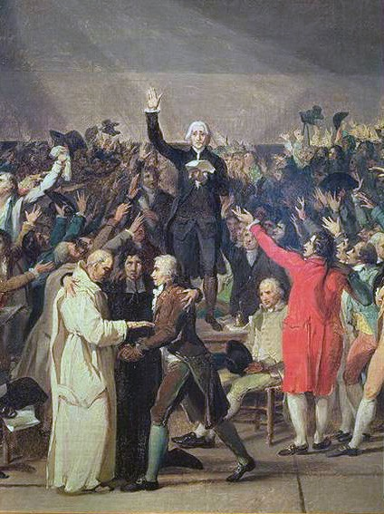
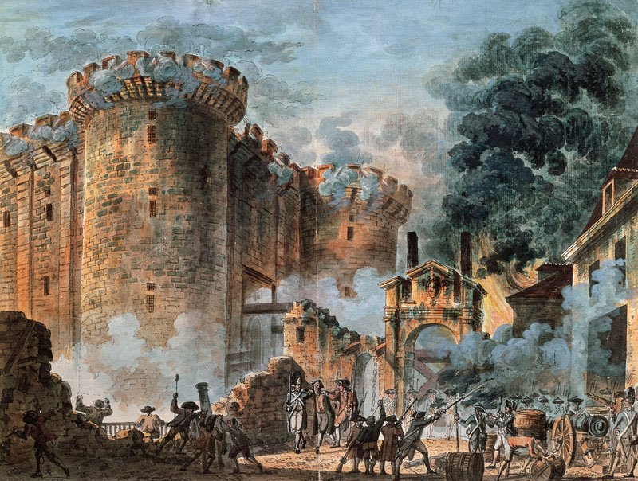
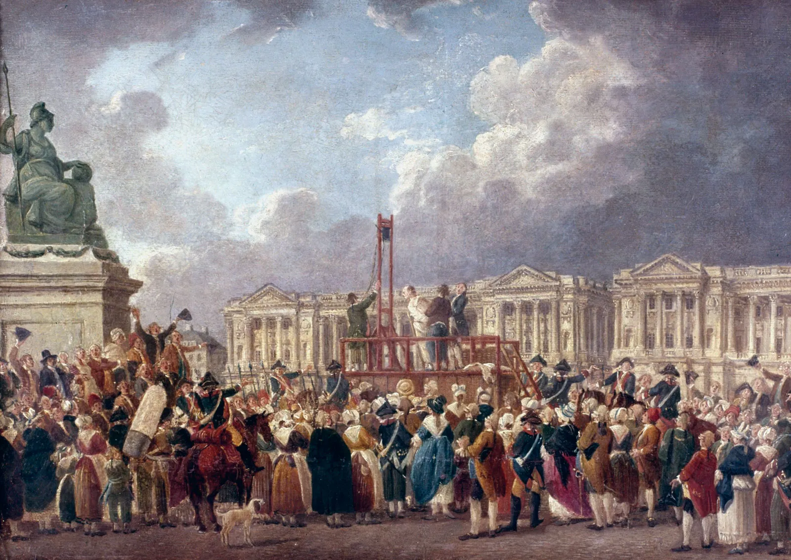
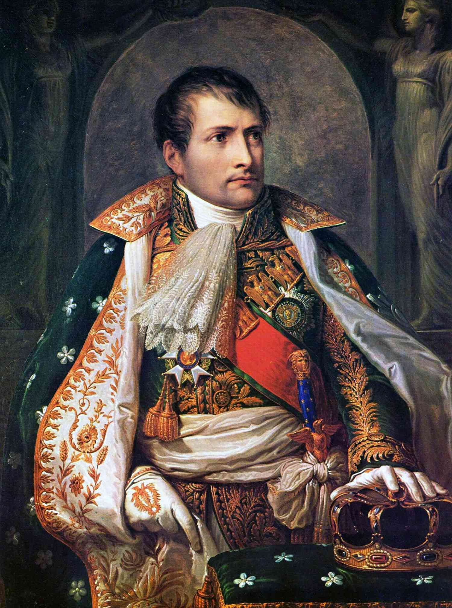

History of the French Revolution
Liberté, égalité, fraternité
The French Revolution was a period of political and social upheaval, from 1789 to 1799.

Major events of the French Revolution




The Estates-General: Meeting called to address financial crisis turns into forum for grievances.
The Storming of the Bastille: Parisians overthrow symbol of monarchy, demonstrating power of the people.
The Reign of Terror: Revolutionary government unleashes campaign of violence against perceived enemies.
The Rise of Napoleon Bonaparte: Military leader becomes emperor, conquers much of Europe.
“I saw the crown of France laying on the ground, so I picked it up with my sword.” ― Napoleon Bonaparte
Join our newsletter!
Learn more about the French Revolution with our newsletter, packed with history, analysis, and insights!